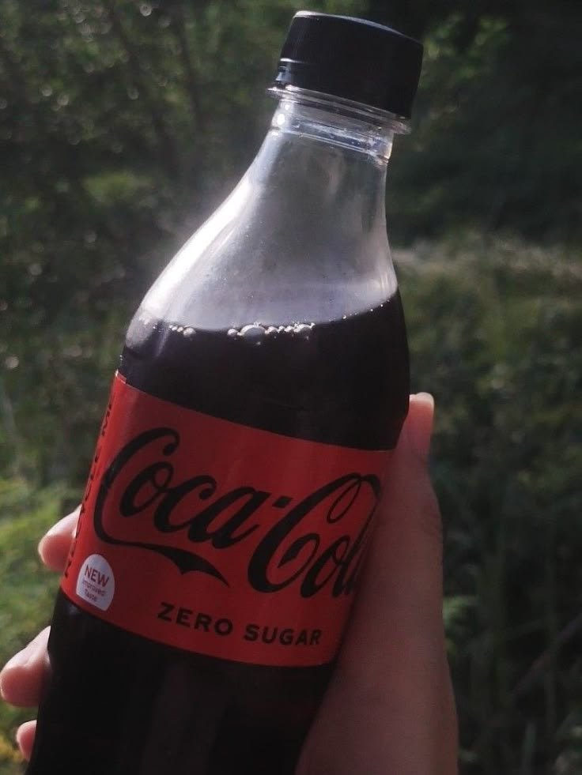

Coca-Cola
While most people think of cakes, pastries, or ice cream when they hear the word "dessert," my ultimate choice has always been a simple, ice-cold Coke. There is just something incredibly refreshing about it that nothing else can match.
It used to be my absolute go-to drink. Whether I was deeply immersed in coding, playing a long game of chess, or just staying up late thinking about the universe, Coke was always there to keep me awake and refreshed.
Looking back, drinking that many cans a day was definitely a wild and unhealthy habit! It was a borderline obsession that fueled my late-night logic sessions.
Nowadays, I can laugh about it. I still love the taste and the immediate refreshing kick it gives, but I definitely consume it in moderation now. Still, if I had to choose a treat to finish off a meal, an ice-cold Coke will always be my top tier "dessert."